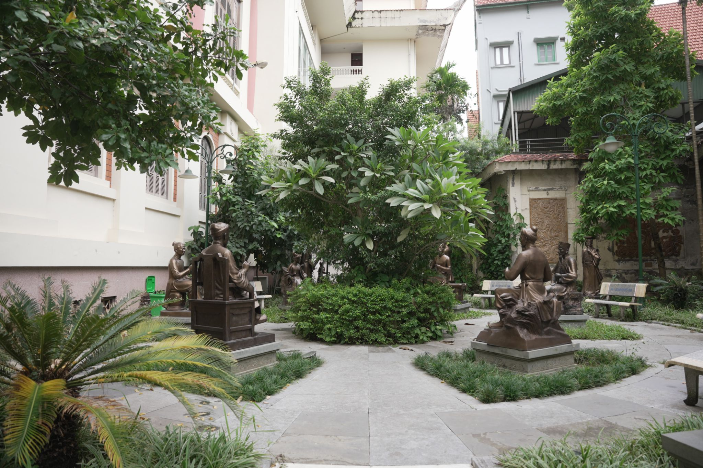
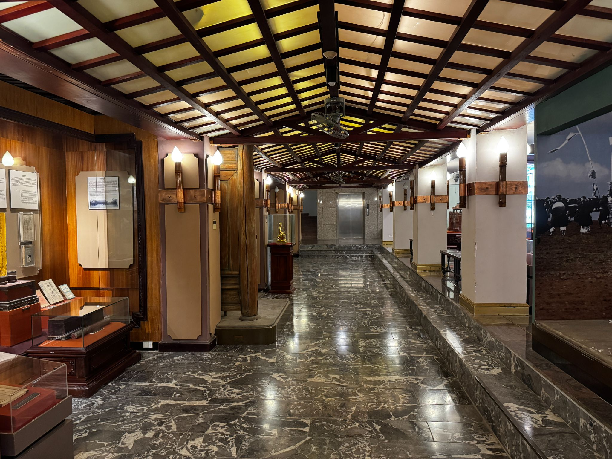
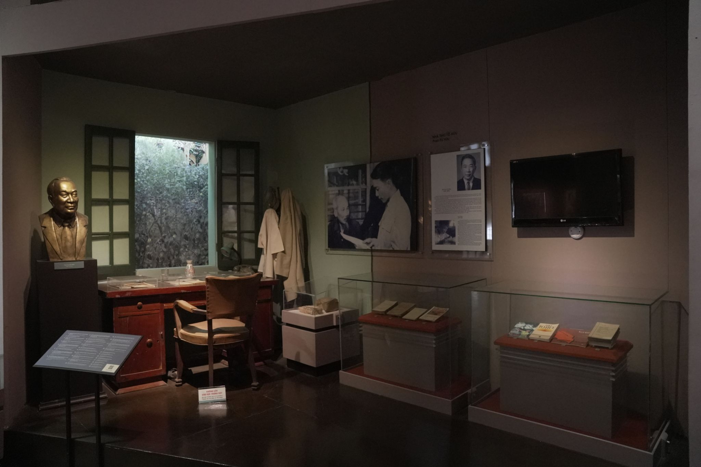
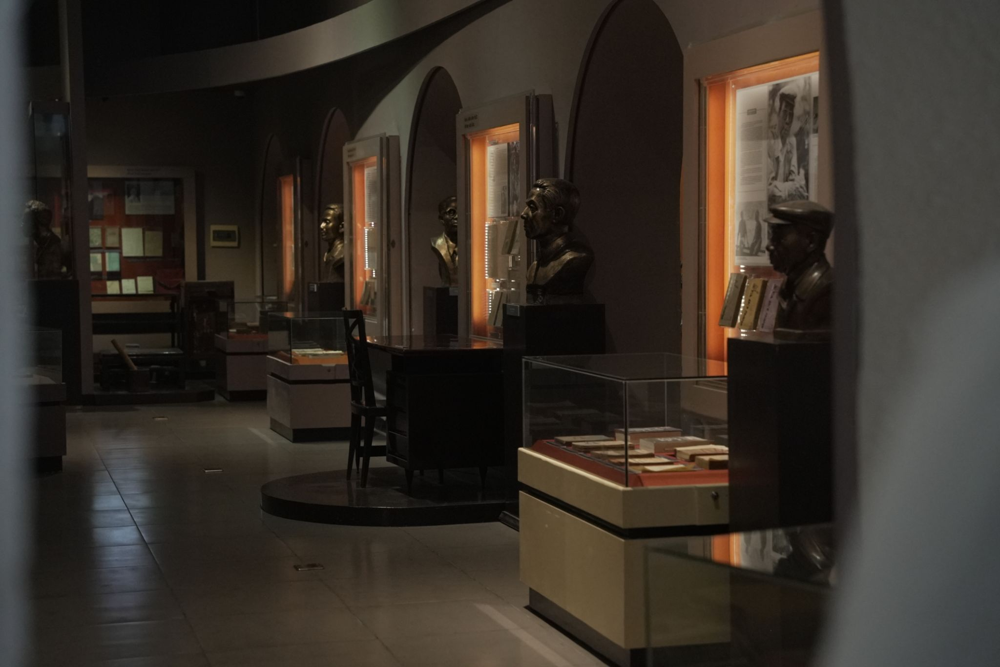

Trong bài
Bảo tàng Văn học Việt Nam không chỉ có những trang sách và bản thảo mà còn là một hành trình xuyên qua nhiều thế kỷ văn chương dân tộc. Với khu trưng bày ngoài trời và 3 tầng trưng bày trong nhà, mỗi không gian lại mang đến một câu chuyện riêng. Cùng khám phá bản đồ tham quan Bảo tàng Văn học Việt Nam để biết nên đi đâu, xem gì và đâu là những điểm không nên bỏ qua.
Bản đồ tham quan Bảo tàng Văn học Việt Nam có gì?
Bảo tàng nằm tại ngõ 275 Âu Cơ, Hà Nội, là nơi sưu tầm, bảo quản, nghiên cứu và giới thiệu những tư liệu, hiện vật phản ánh quá trình hình thành và phát triển của văn học Việt Nam. Bảo tàng chính thức mở cửa đón khách từ ngày 26/6/2015.
Không gian tham quan Bảo tàng Văn học Việt Nam được chia thành hai khu vực chính: trưng bày ngoài trời và trưng bày trong nhà. Phần trong nhà gồm 3 tầng, được tổ chức theo dòng chảy lịch sử văn học, giúp người xem từng bước đi từ văn học cổ – trung đại đến văn học hiện đại.
Có thể hình dung hành trình tham quan theo sơ đồ đơn giản:
Cổng bảo tàng → Khu trưng bày ngoài trời → Tầng 1 → Tầng 3 → Tầng 5 → Không gian trưng bày chuyên đề.

Tuy nhiên, bạn không nhất thiết phải đi theo đúng một lộ trình cố định. Nếu lần đầu đến bảo tàng, đi theo trình tự từ ngoài trời lên tầng 1, tầng 3 rồi tầng 5 sẽ giúp bạn dễ hình dung hơn về sự vận động của văn học Việt Nam qua các thời kỳ.
Khu vực tham quan Bảo tàng Văn học Việt Nam ngoài trời
Ngay trong khuôn viên bảo tàng, du khách có thể khám phá phần trưng bày ngoài trời trước khi bước vào tòa nhà chính.

Điểm nhấn khác của khu vực ngoài trời là hệ thống tượng các danh nhân văn học thời kỳ cổ – trung đại. Đây là không gian phù hợp để dừng lại quan sát, chụp ảnh và làm quen với những nhân vật sẽ tiếp tục xuất hiện trong hành trình khám phá bên trong bảo tàng.
Nếu có thời gian, bạn nên tham quan khu vực này trước thay vì chỉ đi thẳng vào tòa nhà. Nó tạo nên phần mở đầu trực quan cho câu chuyện về nguồn gốc và sự phát triển của văn học dân tộc.
Tầng 1: Đi qua 10 thế kỷ văn học cổ – trung đại

Sau khu vực ngoài trời, tầng 1 là điểm dừng quan trọng trong bản đồ tham quan Bảo tàng Văn học Việt Nam. Đây là không gian giới thiệu văn học Việt Nam thời kỳ cổ – trung đại, kéo dài từ khoảng thế kỷ X đến thế kỷ XIX.
Không gian được tổ chức thành nhiều nội dung, từ lịch sử văn học, chữ viết đến học hành, thi cử và những danh nhân văn hóa tiêu biểu.
Tầng 3: Những nhà văn, nhà thơ và câu chuyện phía sau tác phẩm

Tiếp tục hành trình lên tầng 3, không gian trưng bày chuyển sang những giai đoạn văn học gần với thời hiện đại hơn.
Tầng này giới thiệu nhiều hình ảnh, tài liệu và hiện vật gắn với các nhà văn, nhà thơ tiêu biểu đầu thế kỷ XX và các tác giả được trao Giải thưởng Hồ Chí Minh về văn học nghệ thuật.
Nếu tầng 1 giúp người xem nhìn lại nền tảng của văn học dân tộc thì tầng 3 đưa du khách đến gần hơn với những con người đứng sau các tác phẩm quen thuộc.
Tầng 5: Văn học kháng chiến, giải thưởng và hành trình của Hội Nhà văn

Điểm cuối trong hành trình chính là tầng 5, nơi giới thiệu nhiều thành tựu văn học trong thế kỷ XX và tôn vinh các tác giả có đóng góp nổi bật cho nền văn học Việt Nam.
Không gian này giới thiệu các nhà văn, nhà thơ đoạt Giải thưởng Hồ Chí Minh và Giải thưởng Nhà nước về văn học nghệ thuật, đồng thời đề cập đến những nội dung liên quan đến văn học trong các cuộc kháng chiến và quá trình phát triển của Hội Nhà văn Việt Nam.
Gợi ý lộ trình tham quan Bảo tàng Văn học Việt Nam
Nếu đây là lần đầu đến bảo tàng, bạn có thể tham khảo lộ trình:
Bước 1: Tham quan khu vực ngoài trời, xem phù điêu gốm và tượng danh nhân.
Bước 2: Lên tầng 1, tìm hiểu văn học cổ – trung đại, chữ viết, khoa cử và các hiện vật về Nguyễn Du, Nguyễn Trãi cùng nhiều danh nhân khác.
Bước 3: Lên tầng 3, khám phá văn học đầu thế kỷ XX, các nhà văn, nhà thơ và Không gian văn hóa Xóm Chòi.
Bước 4: Tiếp tục lên tầng 5, tìm hiểu văn học thời kỳ kháng chiến, các tác giả đoạt giải thưởng và lịch sử Hội Nhà văn Việt Nam.
Bước 5: Kết thúc bằng việc khám phá khu trưng bày ngoài trời hoặc các không gian chuyên đề nếu đang được mở cửa.
Với cách đi này, chuyến tham quan sẽ giống như một hành trình theo dòng thời gian: văn học dân gian → văn học cổ – trung đại → văn học đầu thế kỷ XX → văn học thời kỳ kháng chiến và hiện đại.
Với bản đồ tham quan Bảo tàng Văn học Việt Nam gồm khu ngoài trời và 3 tầng trưng bày trong nhà, du khách có thể lần lượt khám phá dòng chảy văn học Việt Nam từ dân gian, cổ – trung đại đến hiện đại. Nếu lần đầu đến đây, hãy bắt đầu từ khu ngoài trời, đi qua tầng 1, tầng 2, tầng 3 và dành thời gian cho các không gian chuyên đề. Mỗi điểm dừng đều mở ra một câu chuyện riêng về văn chương và những người làm nên lịch sử văn học Việt Nam.
Bảo tàng Văn học Việt Nam